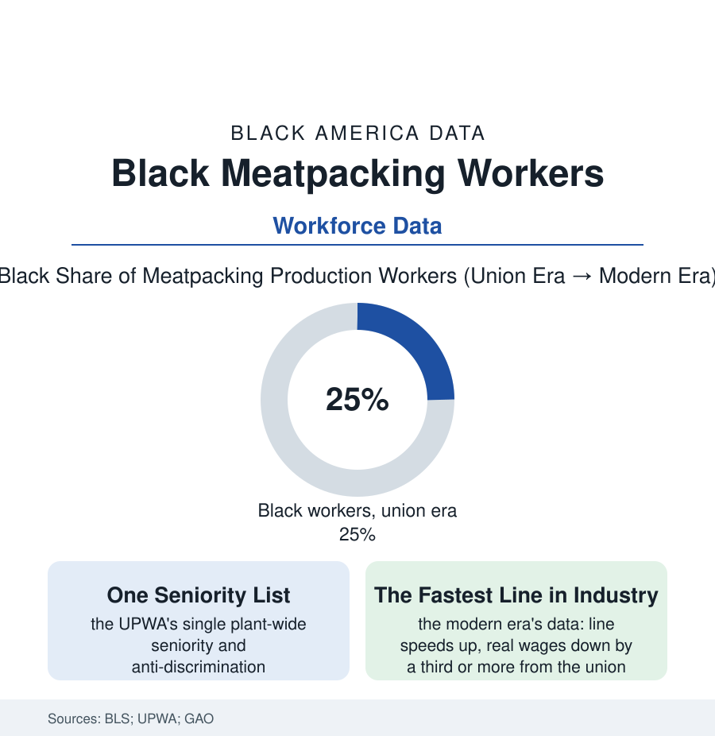

Black Employment
The Packinghouse: The Union That Practiced Equality Before It Was Law
Meatpacking's interracial union made Black packers among the best-paid industrial workers in America — then the industry rebuilt itself rural, nonunion, and low-wage. The packinghouse file.

In the middle of the American century, some of the best industrial jobs a Black worker could hold were in the packinghouses of Chicago, Omaha, and Kansas City — union jobs at master-contract wages in an industry whose union, the United Packinghouse Workers of America, made racial equality an operating rule a decade before federal law required it. The industry then rebuilt itself — rural, restructured, and deunionized — and the same work became some of the most dangerous and worst-paid in the BLS tables. This article reads the packinghouse file.
The House That the UPWA Built
The packinghouse workforce was built by the same migrations as the steel file's, with a different institutional ending: the stockyard cities' Black populations (Chicago's Black Belt fed by the same trains; Omaha's Near North Side; Kansas City's packing districts) supplied the kill floors' labor, and the CIO organizing of the 1930s and 40s built, in the UPWA, the era's most deliberately interracial union — its record documented in the labor histories: Black officers at the national level, anti-discrimination departments with grievance power, a single plant-wide seniority list (the exact mechanism whose absence locked the steel mills — here adopted as policy), and master contracts that by the 1950s and 60s had pulled packinghouse wages to the top of the food industries and within reach of auto and steel. The consequence sits in the census rows of the stockyard neighborhoods: Black packinghouse families' incomes at the industrial middle class's door — the home purchases, the college tuitions of the packing districts' oral histories — built on kill-floor wages that the contract, not the market's mercy, had set. The union's civil-rights practice ran ahead of its era in the documentary record (the UPWA's funding and staffing of movement causes in the 1950s-60s, its locals' desegregation fights in the Southern plants) — the packinghouse file is where the employment section's union story is told in its strongest form: solidarity as an institution with a treasury, not a sentiment.
The Restructuring: Same Work, New Terms
The industry's reinvention is in the GAO and BLS record: beginning in the 1960s and completing by the 1990s, the new packers (IBP and its imitators) abandoned the union stockyard cities for rural single-story plants near the feedlots, broke the master contract's pattern (the concession strikes of the 1980s — Hormel's P-9 strike the era's famous defeat), deskilled the line into specialized stations, raised line speeds, and cut real wages by a third or more from the union peak in the industry studies' arithmetic. The workforce's composition turned with the model: the Black packinghouse towns' jobs evaporated with their plants (the stockyard districts' unemployment rows), and the new rural plants staffed from the era's new migrations — the Latino and refugee workforces of the modern meatpacking towns, whose injury and illness rates (the BLS tables' perennial top ranks — amputations, lacerations, repetitive trauma at rates the GAO's reports document year after year) and whose pandemic exposure (the 2020 plant outbreaks' data — meatpacking counties' infection curves among the nation's worst) wrote the modern file. The Black worker's place in the new industry is the data's quieter line: present in the Southern and rural plants' crews, in the poultry sector's heavily Black lines of the Southeast (the poultry file's own injury and organizing record), and in the industry's supervisory and USDA-inspection tiers — but the institution that once converted this work into middle-class wages, the interracial industrial union at master-contract strength, survives in the modern industry only in fragments the organizing drives of the current decade are attempting, plant by plant, to rebuild.
Reading the Packinghouse Data
The packinghouse file isolates a variable the whole employment section argues over: the work did not change — the cattle, the knives, the cold — but the institution around it did, and the same hands earned a middle class or a poverty wage depending on the decade's contract. The wage series and the injury tables are the argument: labor's outcomes are built, and can be unbuilt, by arrangements men and women make and lose. The stockyards are museums now. The experiment's results are still in the data.
More in Black Employment
The Black Unemployment Rate: The Two-to-One Pattern
Black unemployment runs at roughly twice the White rate — 5.5 percent against 3.3 percent in annual averages — a ratio stable across five decades of federal data. How it is measured and why it persists.
Black Median Weekly Earnings: The 80-Cent Ratio
Black full-time workers earn a median of about $900 a week — roughly 80 cents for every dollar White workers earn. The BLS earnings data by group, gender, and occupation.
Black Labor Force Participation: Working at National Rates
Black labor force participation runs at roughly the national rate — and Black women participate at higher rates than White women. The BLS participation data.
Source: U.S. Bureau of Labor Statistics; U.S. Bureau of Labor Statistics injury and illness data; United Packinghouse Workers historical records; Government Accountability Office meatpacking studies.